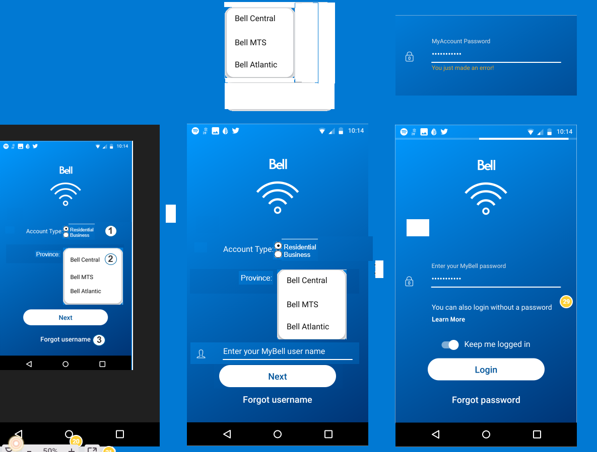
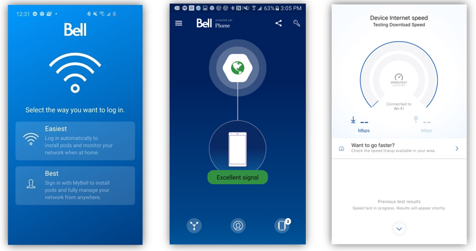

Bell Wi-Fi App
Product Type: IOS and Android Applications User base: 220K
The Product:
Originally launched in 2018, the Bell Wi-Fi app was a supplementary product offering to users who purchased Wi-Fi pods (think Wi-Fi extenders). Since then, the app has grown into a one-stop destination for managing home Wi-Fi networks. Used by over 210K active users, the app offers Bell customers the ability to troubleshoot their Wi-Fi and control who accesses it. As PM for the Wi-Fi app, I have helped build and expand the features below.
Core Features:
- Pause internet connection for any connected devices
- See what devices are connected to the network
- Run speed tests and see signal strength by devices
- Create user profiles and assign devices
- Share your network name and password
The Role:
As Product Manager for the Bell Wi-Fi App, I have helped grow the user base from 40K active users to 210K over an 11-month period. To achieve this, I worked with the engineering and design teams to develop three localized app versions (Business, Manitoba, and Atlantic) and develop new value add features.
What I Did:
- Had daily stand-up meetings, clarified scope, implemented changes, prioritized deliverables, got stakeholder acceptance, monitored status for performance and budget. Planned WBS schedule
- Redesigned and improved login / onboarding process
- Implemented Jira into engineering and product teams for the Wi-Fi app, leading to a 20% decrease in bug resolution time
- Built app reporting based on SQL and KIbana data pulls. Reporting was presented to leadership monthly
- Led an investigation into the app's support environment. Performed a competitive analysis and compared support call volumes to associated article traffic to determine support gaps. Presented findings to senior leadership, leading to video support funding
- Grew monthly app installs by introducing deep links to other apps in Bells mobile ecosystem
- Built and developed monthly user-interview program
- Developed product roadmap based on user-feedback and monthly reporting to executive team
App Login Wireframes:
App pages:
Metrics:
- Grew the app base from 40K to over 220K active users
- Maintained a 4.2/5 IOS app rating
- Reduced support call rate by 10%
Key-Takeaways:
- How product management and product ownership contrasts to project management
- How to work with UX & Design resources
- How to best manage a remote engineer team when the individuals are hard to reach and lack progress.